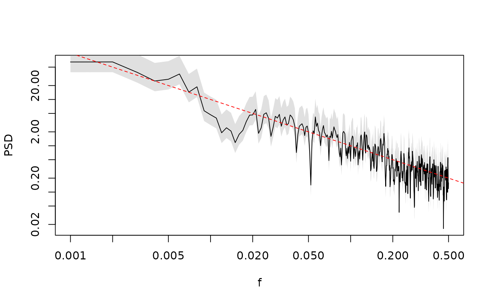

Add confidence interval
AddConfInterval.RdAdd a confidence interval to a spectral estimate assuming the uncertainty of the spectral estimates follows a chi-squared distribution with the degrees of the freedom from the spectral estimates.
Arguments
- spec
a spectral object of class
"spec"or a list with the minimum componentsspecanddofwhich are vectors of the same length giving the spectral estimates and the corresponding degrees of freedom.- pval
numeric; p value for the confidence interval, i.e. the interval is constructed from pval / 2 to 1 - pval / 2.
- MINVALUE
numeric; minimum value to limit the confidence interval.
Value
the input object including the new list elements lim.1 and
lim.2 giving the upper and lower bound of the confidence interval,
respectively.
Examples
N.R <- 1000
N.T <- 100
save.spec <- matrix(NA, N.T / 2, N.R)
for (i.R in 1 : N.R) {
save.spec[, i.R] <- SpecMTM(ts(SimPowerlaw(1, N.T)))$spec
}
q.empirical <- apply(save.spec, 1, quantile, c(0.025, 0.975))
testspec <- SpecMTM(ts(SimPowerlaw(1, N.T)))
LPlot(AddConfInterval(testspec), ylim = c(0.05, 10))
lines(testspec$freq, q.empirical[1, ], col = "red")
lines(testspec$freq, q.empirical[2, ],col = "red")
legend("bottomleft", lwd = 2, col = c("black", "red"),
legend = c("one realization with chisq conf intervals",
"MC confidence intervals"))
